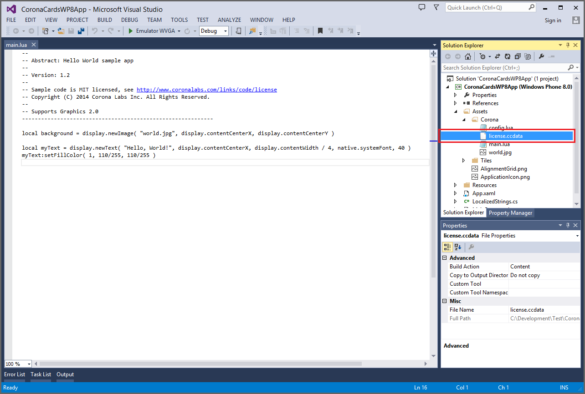

CoronaCards — Windows Phone 8
CoronaCards Licensing
CoronaCards for Windows Phone 8 can be used on an unlimited trial basis, but all projects will be watermarked with TRIAL and a message will be logged to Visual Studio’s Output panel.
To purchase a license, please do so via the CoronaCards pricing page.
Applying a License
Once you have purchased a CoronaCards license, please follow these steps:
- Download a new license file (
license.ccdata) by clicking the Get License button on the right side of your Corona Account Info page. - Place this file in the root of your CoronaCards project folder, alongside
main.lua. - Open your CoronaCards Windows Phone project in Visual Studio.
- View the Solution Explorer panel in Visual Studio.
- Expand the project’s Assets → Corona tree.
- Open Windows Explorer and browse to where the
license.ccdatafile is located. - Drag and drop this
license.ccdatafile under the Assets → Corona folder in Visual Studio’s Solution Explorer panel.

CoronaCards Daily Builds
As a CoronaCards licensee, you gain access to the latest CoronaCards Daily Builds. You can access Daily Builds via our general Corona Daily Builds page. On this page, you will see tabs for all products for which you hold a license.
Troubleshooting
Unauthorized Version
If you see an error message on screen stating “Your license is not authorized to use the current version of Corona that you are running. Your license is only authorized to run older builds…”, it means that the license.ccdata file cannot authorize the version of CoronaCards that you’re using. When you purchase a license, it’s valid for the current version of CoronaCards and all versions released one year beyond the license date. While you can build with the current version beyond that point, you will not be able to build using a version of CoronaCards released later than one year past the license date unless you purchase a new license.ccdata file via Corona Labs support.